ANE Benchmarks
Measuring the real performance of Apple's neural accelerator
Originally published on Substack. Mirrored here with the subscription widgets removed; text and figures unchanged.
Apple says the M4 Neural Engine delivers 38 TOPS. Let’s measure it.
In Part 1, we reverse-engineered the ANE software stack and gained direct access via _ANEClient, bypassing CoreML entirely. Now we can benchmark without CoreML’s overhead distorting the numbers.
What we found is surprising. The “38 TOPS” number is technically not wrong, but it’s deeply misleading. And there are patterns for extracting maximum throughput that Apple has never documented.
Test Setup
Hardware: M4 Mac Mini (10-core CPU, 16-core ANE)
Software: macOS 15.x, direct _ANEClient API (no CoreML)
Timing: mach_absolute_time(), 100+ iterations, median reported
Precision: FP16 compute (ANE native), FP32 I/O
Matmul Scaling: The Basics
Let’s start with the simplest possible benchmark: square matrix multiplication at increasing sizes.
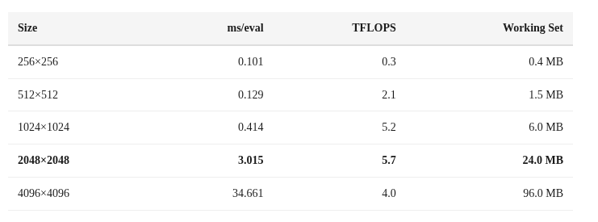
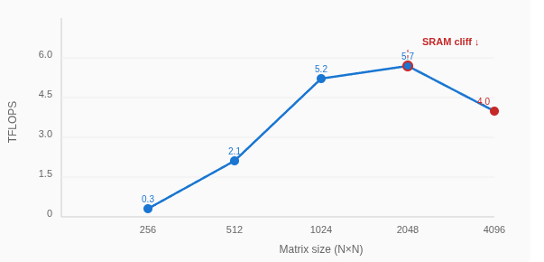
Two things jump out:
256×256 is dispatch-limited: At 0.101ms, most of the time is XPC + IOKit overhead (~0.095ms). The actual compute is only ~0.006ms.
Performance drops at 4096: From 5.7 TFLOPS at 2048 to 4.0 TFLOPS at 4096. Something is overflowing.
The SRAM Cliff
That 2048→4096 performance drop is the SRAM cliff. The working set for a matmul is 3 matrices (A, B, C). In FP16:
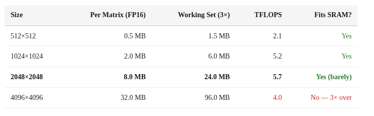
At 2048×2048, the 24 MB working set fits in SRAM and we get peak single-op throughput (5.7 TFLOPS). At 4096×4096, the 96 MB working set is ~3× larger than SRAM, forcing spills to DRAM and dropping throughput by 30%.
The cliff between 24 MB (fast) and 96 MB (slow) places the ANE’s on-chip SRAM at roughly ~32 MB. The transition isn’t a hard wall — performance degrades gradually, suggesting a cache-like hierarchy rather than a hard scratchpad.
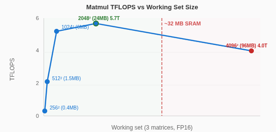
Convolution > Matrix Multiply
Here’s something that isn’t obvious from Apple’s documentation: the ANE is fundamentally a convolution engine. Expressing the same computation as a 1×1 convolution instead of a matrix multiply gives dramatically better throughput.
A matrix multiply C[M,N] = A[M,K] @ B[K,N] can be expressed as a 1×1 convolution by reshaping:
Input:
(1, K, 1, M)Weight:
(N, K, 1, 1)Output:
(1, N, 1, M)
Same FLOPs, same result, but the ANE’s conv datapath handles it much more efficiently.
Deep Graphs Fill the Pipeline
A single matmul operation only uses ~30% of the ANE’s peak capacity. The hardware is designed for graphs — chains of operations that keep all 16 cores busy. The more operations you chain, the closer you get to theoretical peak:
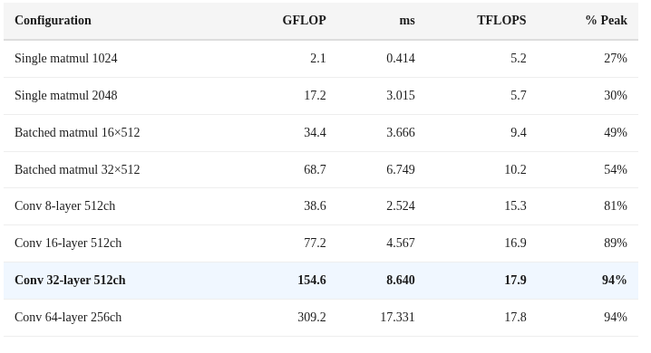
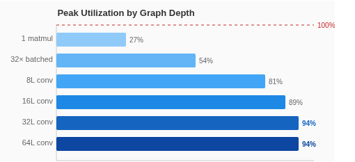
Rules for maximizing ANE throughput:
Deep graphs, not wide. Chain 16-64 ops in one MIL program. Single ops waste 70% of capacity.
Conv over matmul. 1×1 convolutions use the fast datapath. Matmul is 3× slower.
Stay under 32 MB. Keep per-tensor footprint in SRAM. Spilling to DRAM kills throughput.
Avoid dispatch-limited ops. Anything under ~1ms is dominated by the 0.095ms dispatch overhead.
CoreML vs _ANEClient: The Overhead Tax
How much performance does CoreML leave on the table? We measured the same operations through both paths:
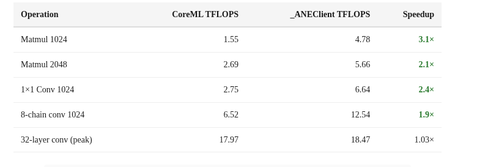
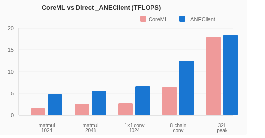
For small operations, CoreML adds 2-4× overhead. The gap narrows at high-throughput configurations because the ANE compute time dominates. But for latency-sensitive workloads (LLM token decoding, real-time inference), the CoreML tax is severe.
INT8 = FP16: The “38 TOPS” Reality
Apple claims “38 TOPS” for the M4 Neural Engine. Here’s what that actually means.
We measured identical operations in both FP16 and INT8:
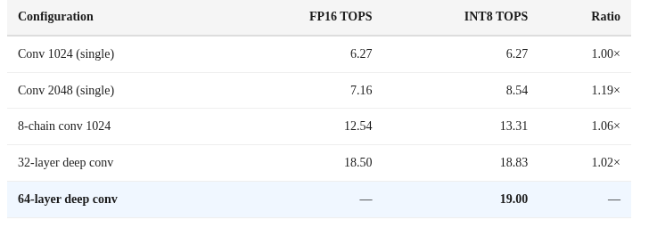
Finding: There is no 2× INT8 speedup. INT8 and FP16 deliver nearly identical throughput. The ANE dequantizes INT8 weights to FP16 before compute.
INT8 saves only memory bandwidth (smaller weights to load from DRAM), not compute cycles.
Apple’s “38 TOPS INT8” is computed as 19 TFLOPS FP16 × 2, following the industry convention of counting INT8 operations as 2× the FP16 rate. But the hardware doesn’t actually execute INT8 operations twice as fast.
The true peak is 19 TFLOPS FP16, and that’s what you get regardless of quantization.
This is 100% of the theoretical peak we calculated from the hardware configuration (16 cores × ~1.2 TFLOPS/core). The 94% utilization at 32+ layer depth means we’re essentially measuring the hardware’s raw capability.
Power Efficiency: The ANE’s Secret Weapon
If throughput were the only metric, a GPU would always win. But the ANE’s real advantage is efficiency.
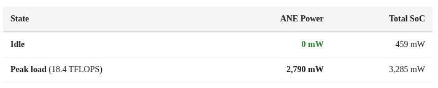
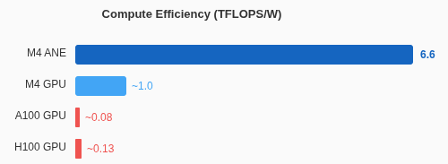
Zero. Milliwatts. At idle. The ANE has hard power gating — it doesn’t just clock-gate, it completely powers down when not in use. No leakage, no standby drain.
At peak load, it delivers 6.6 TFLOPS/W. For context:
Compute Efficiency (TFLOPS/W)M4 ANE6.6M4 GPU~1.0A100 GPU~0.08H100 GPU~0.13
The ANE is roughly 80× more efficient per FLOP than an A100. Of course, the A100 has 50× more total throughput. But for on-device inference where you’re running off a battery, the ANE is extraordinary.
ANE vs SME: When to Use Which
The M4 also has Apple’s SME (Scalable Matrix Extension) on the CPU cores. Here’s how they compare:
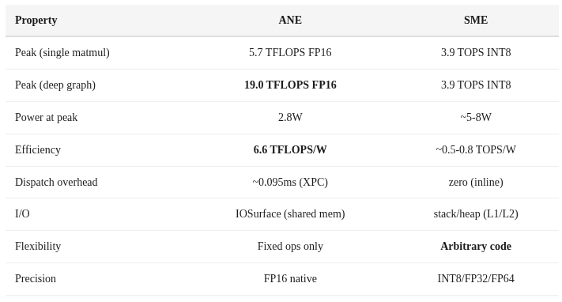
Use ANE for: Large batch inference, deep graphs with 16+ layers, energy-constrained scenarios, sustained throughput
Use SME for: Single-token decode (zero dispatch overhead), custom operations ANE doesn’t support, small matrices, anything requiring FP32+ precision
The ideal LLM inference strategy on M4 is hybrid: prefill (large batch, high throughput) on ANE, decode (single token, latency-sensitive) on SME.
Reproducibility
All benchmark code is available at github.com/maderix/ANE in the ane/ directory. Key files:
ane/inmem_bench.m — In-memory ANE benchmarks
ane/inmem_peak.m — Peak throughput measurement (deep conv graphs)
ane/sram_probe.m — SRAM size probing
ane/api_exploration.m — _ANEClient API discovery
Compile with: clang -framework Foundation -framework IOKit -framework CoreML -o bench ane/inmem_bench.m
Requires macOS 15+ on Apple Silicon. The private framework symbols are resolved at runtime via dlopen/objc_getClass.
What’s Next
We now know the ANE’s true capabilities: 19 TFLOPS FP16 at 2.8W, with the right graph structure. In Part 3, we’ll attempt something Apple explicitly doesn’t support: training a neural network on the Neural Engine. We’ll crack the weight blob format, work around the 119-compile limit, and get a model learning on hardware designed only for inference.
All measurements on M4 Mac Mini, macOS 15.x. Median of 100+ iterations reported. Code at github.com/maderix/ANE.